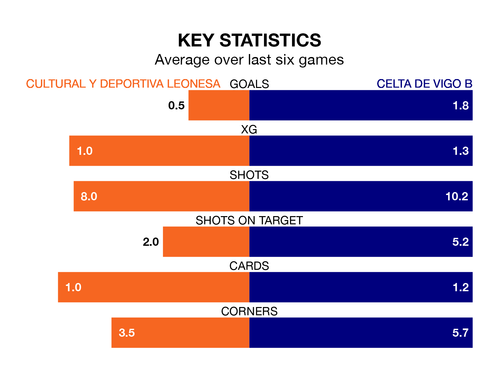

Celta de Vigo B face a challenge to maintain their high-scoring form away against a tight Cultural y Deportiva Leonesa defence on Sunday.
With 46 goals in 27 games, Celta are the joint-top scorers in Primera Division RFEF Group 1 ahead of the 5pm kick-off at the Estadio Municipal Reino de León.
They face a Cultural y Deportiva Leonesa side who have scored 25 in 27 matches, but conceded only 21 goals, putting them joint-third among the league's tightest defences – only Gimnàstic de Tarragona and SD Ponferradina have conceded fewer goals.
In Miguel Bañuz Antón, Cultural y Deportiva Leonesa can rely on one of the league's safest pair of hands. He has kept 13 clean sheets in his 25 appearances this season, and no 'keeper has prevented the opposition scoring more often in Primera Division RFEF Group 1.
In Celta's net, César Fernández González has three clean sheets in six games. He has conceded a goal every 108 minutes, 60% more often than the 173 minutes between goals for Bañuz Antón.
In the last 10 years, Cultural y Deportiva Leonesa and Celta have played each other on 15 occasions. Cultural y Deportiva Leonesa won three of them, Celta eight, and they drew four times.
On average, Cultural y Deportiva Leonesa scored 1.2 goals and Celta 1.7 in those matches.
Their last meeting was on December 9, when Celta won 2-0 at home.
The home team are in bad form in Primera Division RFEF Group 1, with no wins and four draws from their last six games.
With two wins and three draws over that period, the visitors' form is better – they have taken nine points from 18, compared to Cultural y Deportiva Leonesa's four.
Celta are fifth in the table after 27 games, of which they have won 14 and drawn five, earning 47 points.
Cultural y Deportiva Leonesa are one place behind Celta in sixth, with 11 wins and 10 draws putting them on 43 points.
Cultural y Deportiva Leonesa's last match was on March 10, a 1-1 draw against CE Sabadell, with Alberto González García getting the goal for Cultural y Deportiva Leonesa.
Celta drew 0-0 with SD Ponferradina last time out, on March 9.
Updated: 15:10 (UTC), 15/03/24